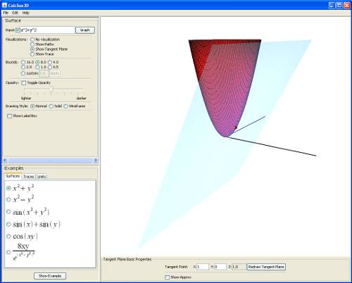
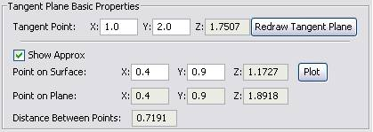

Chapter 3: Tangent Plane Visualization
- Chapter 1: Introduction
- Chapter 2: Traces Visualization
- Chapter 3: Tangent Plane Visualization
- Chapter 4: Limit Path Visualization
- Chapter 5: Suggested Uses of Visualizations
Getting Started
Clicking the "Tangent Plane" radio box under "Visualizations" will display a plane tangent to the point (0,0). At the bottom of the 3D window, a new panel labeled "Tangent Plane Properties" will also have appeared.
Moving the plane
You can move the plane by changing its tangent point. To do this, change the values of the X and Y fields next to "Tangent Point" and click "Redraw Tangent Plane".
Tangent plane approximation point
If you click the "Show approx" check box, the tangent plane panel will expand to display more controls.
The new area displays information for three pieces of data:
- the coordinates of the point on the surface
- the coordinates of the corresponding point on the tangent plane
- the distance between these two points
This lets users see the accuracy of using a tangent plane to approximate the value of a function at a given point. You can move the point on the surface around by changing its X and Y values and clicking "Plot". The other fields will automatically update themselves. Students are encouraged to experiment with coordinates that are near the tangent point in order to see how accurate the approximation becomes.